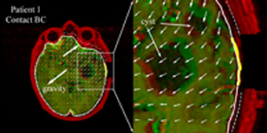
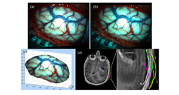
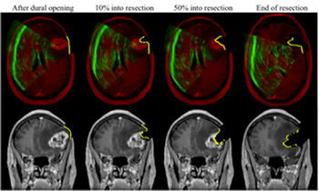

Estimation of Intraoperative Brain Deformation
Fig. 1. Illustration of model-based brain shift compensation. The patient's head and intraopera-tive images (e.g., iUS, iSV, and iFI) are continuously monitored using a common tracking sys-tem. The resulting sparse displacement data are assimilated into a biomechanical model to pro-duce whole-brain deformation from which an updated MR volume is generated for subsequent neuronavigation. |
 Fig. 2. Typical brain deformation field estimated by the inversion data assimilation scheme us-ing the brain-skull contact boundary conditions that allow the brain parenchyma to move towards or away from the skull. Thick yellow lines: cross-section of cortical surface acquired from co-registered iSV; Solid/dashed white lines: cross-sections of model-updated brain surface; Thin dashed white lines: skull inner-surface. |
Fig. 3. Displacement map generated by applying a transformation matrix on the triangulated tu-mor boundary surface nodes. |
Fig. 4. Overlays of 3D iUS before (red) and after (green) dural opening using transforms obtained from the optical tracking (a) or rigid body re-registration (b). Feature alignment was significantly improved after B-Spline nonrigid registration (c), suggesting the effectiveness of the registration technique in capturing feature displacement. The resulting parenchymal feature displacement vectors are shown in (d). |
 Fig. 5. Illustration of stereovision surface reconstruction: rectified left (a) and right (b) camera images after dural opening, which limit the search for correspondence points along a horizontal line. The reconstructed 3D cortical surface is shown in pMR image space (c). Cross-sections of a representative pMR axial image with respect to the reconstructed cortical surfaces (tumor cavity wall not included) are shown for four distinct surgical stages: (0) before dural opening; (1) after dural opening; (2) right before the start of tumor resection; and (3) after tumor resection.
|
 Fig. 6. Representative axial and coronal uMR images after dural opening (left), in the beginning (~10% into resection; second column), middle (~50% into resection; third column), and at the end of resection (right), overlaid with corresponding cross-sections generated from reconstructed iSV surfaces (yellow line). Axial images are also overlaid with iUS (green). The alignments be-tween iUS, iSV, and uMR with parenchymal features indicate consistency between model esti-mates and intraoperative measurements.
|